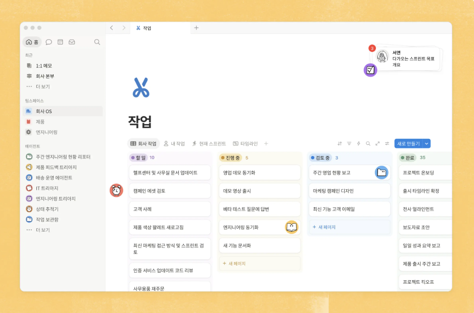

번거로운 작업 자동화
번거로운 작업은 24시간 내내 돌아가는 에이전트에게 맡기고, 가장 중요한 일에 집중하세요.

Notion 에이전트 ➔
개인 맞춤 에이전트와 대화하며 다양한 업무를 맡겨 보세요.
커스텀 에이전트 ➔
우리 팀의 워크플로를 지원하는 상시 가동 에이전트를 구축하세요.
AI 문서 작성과 편집 ➔
초안 작성부터 편집, 최종 검수까지 빠르게 끝내세요.
에이전트 스킬 ➔
플레이북을 만들어 에이전트에게 내 업무 방식을 알려 주고, 필요할 때마다 활용해 보세요.
상황에 반응하는 트리거 ➔
변경 사항이 생기면 곧바로 에이전트가 작업을 시작합니다.
에이전트 조율 ➔
Claude, Cursor를 비롯한 여러 에이전트를 Notion에서 제어하세요.
API ➔
Notion을 기반으로 맞춤형 통합을 구축하세요.
MCP ➔
원하는 AI 툴을 Notion 워크스페이스에 연결하세요.
데이터베이스 자동화 ➔
반복되는 데이터베이스 작업, 코딩 없이도 자동화할 수 있습니다.